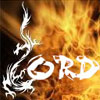
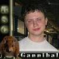
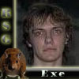
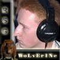
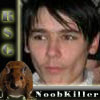
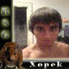

"Мне отмщение и аз воздам..."
(RSG--vs--ESC)
Напомню, что после последнего нашего матча, проигранного клану ЕСК со счетом 2-3, 90% людей в комьюнити настоятельно рекомендовали нашей команде не спешить с рематчем и провести 1-2 CW против более слабых кланов, так сказать для возвращения в ритм побед. Изначально предполагалось, что так оно и произойдет. Но клан LORD, с которым мы должны были встречаться 5-го числа в рамках последнего тура основного сезона лиги RWL перенес матч на 8-е число. Таким образом, без каких либо предварительных матчей и разминок, спустя чуть более недели после первой встречи, наша команда вышла на новую встречу со своими обидчиками, в рамках обязательного матча группового этапа лиги WGP. И если перед первым матчемпрогнозы были примерно 1:2 не в нашу пользу, то к данному матчу лишь единицы предполагали победу нашей команды. Ну чтож, тем больше заслуга наших игроков, которые в очередной раз посрамили критиков...
RSG—[3:2]—ESC
 --vs--
--vs--

RSG)noobkiller —[2:1]—
e-Sport.Fear

RSG)Diablo—[0:2]—
john1
RSG)Xorek—[0:2]—

Vostorg
RSG)Exe—[2:0]—
fagot
RSG AT (
RSG)Exe+

Fist)-[2:0]-ESC AT (
fagot +
e-Sport)Niceman )
А ведь все начиналось вовсе не так хорошо. На редкость не лучший ЛА от меня, зато (опять же на редкость) наличие почти оптимального состава, что сулило как минимум серьезную борьбу. Ну а далее наши игроки снова доказали, что их никак не устраивает позиция №2.
Начало матча так же не сулило ничего хорошего и сильно напоминало прошлую встречу. Очень быстрое поражение Диабло 0-2, практически без борьбы, а так же счет 0-1 в игре Нубкиллера, казалось сценарий повторяется. Но затем рисунок встречи кардинально поменялся. Нубкиллер, в прошлый раз бывший в шаге от того, чтобы спасти команду (луз 1-2) на этот раз не оступился и... Проиграв первую карту в "медведо-войнах" Саня выиграл две карты подряд, а вместе с ними и свою игру 2-1, уверенно запушив с талонами на т2. Паралельно, закончил свои игры ЕХе 2-0 против эльфа- Фагота. И ессли первая игра на ГВ была действительно долгой и напряженной и Ехе, поставивший эксп в самом начале встречи еще долго отбивал атаки оппонента, то вторая игра была уже без шансов для эльфа из ЕСК. 2-0 и у RSG два матчпоинта.
Такое положение вещей правда длилось не долго. Андед клана соперника довольно убедительно победил нашего хумана- Хорька. К сожалению Серега еще раз подтвердил, что находится не в лучшей форме. После этого матча Хорек заявил, что сделает длительный перерыв в своих выступлениях, поскольку не может эффективно тренироваться. Чтож, вся команда желает нашему хуману удачи и скорейшего решения личных проблем, после чего он сможет снова радовать нас своими интересными и не стандартными играми.
Но вернемся к матчу. При счете 2-2 Ехе и Фист доказывают насколько мало шансов у клана-соперника, если играет основная- давно сыгранная АТ пара. ДВе игры прошли без каких либо шансов. Свое истинное лицо игроки ЕСК показали в конце второй АТ игры, когда начался неприкрытый анманнер, лишний раз показавший насколько грязным и не умеющим проигрывать, является этот клан, когда не играет на "домашних" лигах. Чтож, тем сильнее унижение, которое они испытали, поскольку наши игроки на все провокации отвечали лишь улыбками.
В подведении итогов даже нечего написать, настолько очевидна сложившаяся картина. ЕСК, ставшие нашими первыми, за долгое время, обидчиками, после первого матча выдавали приличные порции анманнера и презрения. За что и были СПоЛНА наказаны в прошедшем столкновении. А уважение к нашей команде после этого только возросло, о чем ярко говорит количество поздравлений, после этой победы. И здесь как нельзя кстати выглядит, ставшая крылатой фраза брошенная русским игроком Хулиганом, после победы над Дедманом на финале WCG:Russia- "Сынок, запомни урок"...
RSG--vs--LORD
Ну а уже на следующий день, на волне вчерашней победы, наша команда проводила чисто формальный- вышеупомянутый, матч последнего тура основного сезона лиги RWL vs clan LORD. На подъеме после вчерашней победы не виделось, каким образом ЛОРД смогут составить хотя бы малейшее сопротивление. Но надо отдать им должное, не смотря на то, что в целом матч получился очень легким, размочить счет и создать кое-какие проблемы ЛОРД-у все же удалось...
RSG—[4:1]—LORD
--vs--
RSG)noobkiller —[2:1]—
LorD.NaMeLeSs
RSG)Rain—[0:2]—
pro]100[Yurets
RSG)Xorek—[2:0]—
FromMoscow
RSG)Exe—[2:0]—
Dark_Lord_
RSG AT (
RSG)Exe+
Noobkiller)-[2:0]-LORD AT (
Dark_Lord_ +
pro]100[Yurets )
По самому матчу говорить особо нечего, интересные игры можно пересчитать по пальцам одной руки. ЕХе легко переигравший орка на первой карте, на ЛТ берет хумана, ставит фаст эксп и строит грифонов- 2:0. Наш дебютант Рейн, почти без шансов проигрывает сильнейшему игроку клана-соперника и ставит под большое сомнение свое будущее как игрока нашей команды. Нубкиллер проиграв первую карту, повторил вчерашнее достижение и выиграл 2-1 очень брутально расправившись с соперником-андедом. Игры Хорька прошли без шансов и не стоят того, чтобы останавливаться на них подробно. НАиболее смешными выдались АТ игры, в особенности первая, приста седьмого лвл-а стоит того, чтобы смотреть демку. Но итог очевиден...
На этом основной сезон лиги РВЛ завершен и мы проходим в финалы со второго места с результатом 10 побед и 1 поражение. В первом туре плей офа мы ждем победителя отборочного круга между этими самыми ЛОРД и известным нам кланом РТ. Этот матч состоится в 20-х числах ноября.
Кроме того, вашему вниманию предлагается подборка новостей не игровых, но непосредственно относящихся к нашей команде:
1. первый матч на столь ожидаемой лиге НПЛ не принес ничего кроме разочарования. Первый матч против явного бомжеклана HellHunters не принес ничего кроме разочарования. Фри вин в лице Рейна, проигравший Нубкиллер, да еще и соперник, просто умоляющий судью дать им тех вин по поводу и без повода. В итоге, счет заморожен 1-2. В самое ближайшее время будет принято решение, относительно дальнейшей судьбы этого матча.
2. Благодаря стараниям нашего второго менеджера RSG.Marvelle наш клан обзавелся абсолютно бесполезными, но стильными клан аватарами. Так что теперь наш профайл на любой лиге будет выполнен в одном стиле. Аватары будут корректироваться по мере работы, но на данный момент выглядят так:








3. Ну и последняя, довольно актуальная новость, появившаяся буквально за пол часа до написания этого материала. Итак, с сегодняшнего дня состав нашей команды пополняет сильный и амбициозный донецкий эльф- Wolverine. Который, мы уверены, значительно усилит наш ЛА. Итак, велком новичку и пожелания удачи в нашем нелегком деле...